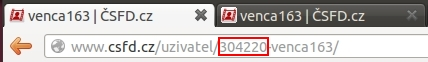

Stačí pouze 2 jednoduché kroky a statistiky hodnocení budou i vaše!
Najděte svoje čsfd id
Každý uživatel má své unikátní číslo. Své čsfd id si lze přečíst v adresním řádku prohlížeče, když si zobrazíte vlastní profil. Hned nalevo od vaší čsfd přezdívky (vašeho nicku).
Vložte si do profilu tento kód
<div style="text-align:center;"><img width="206" height="200" src="http://csfd.herokuapp.com/?type=ratings&version=1&user=304220" alt="načítám statistiky, vyčkejte prosím několik sekund..." /></div>
Nezapomeňte v kódu přepsat červeně vyznačené id svým vlastním.
Na svém profilu klikněte na upravit, přepněte na "úprava v HTML" a vložte si statistiky na místo, kde je chcete mít.
A je to!
Další detaily, pro zájemce =)
Pokud chcete mít statistiky nalevo/napravo, nahraďte v kódu slovo "center"
slovem "left"/"right". Ovládáte-li HTML a CSS, nastylujte si zobrazení dle svého gusta =).
Kvůli značným omezením ze strany csfd.cz se hodnocení hodně cachuje, nová data jsou vygenerována nejdříve po 3 hodinách (pokud je to nutné).
Pokud objevíte nějaký problém nebo si nevíte s něčím rady, můžete mi napsat na venca163@gmail.com, nebo do čsfd pošty (uživatel venca163). Můžete mi také posílat nápady a návrhy na vylepšení.